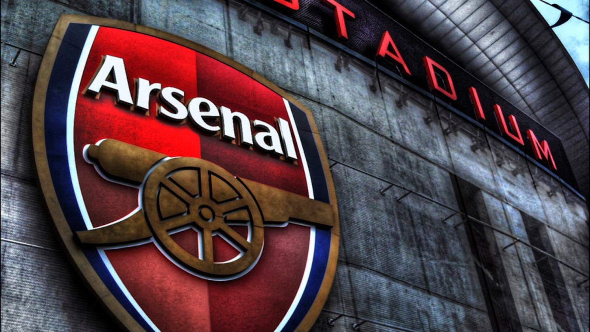
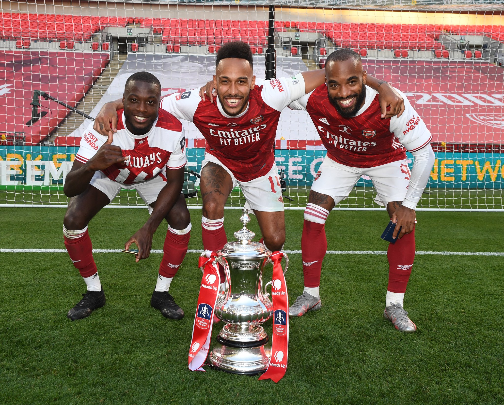

Welcome to the Ultimate Arsenal Fan Page.
Here you will find information about the team, stadium and more.
Created by Cory Platt


Arsenal Football Club is a professional football club based in Islington, London, England, that plays in the Premier League, the top flight of English football. The club has won 13 League titles (including one unbeaten league title), a record 14 FA Cups, two League Cups, 15 FA Community Shields, the League Centenary Trophy, one UEFA Cup Winners' Cup and one Inter-Cities Fairs Cup.
Arsenal was the first club from the South of England to join The Football League, in 1893, and they reached the First Division in 1904. Relegated only once, in 1913, they continue the longest streak in the top division, and have won the second-most top-flight matches in English football history.
In the 1930s, Arsenal won five League Championships and two FA Cups, and another FA Cup and two Championships after the war. In 1970–71, they won their first League and FA Cup Double. Between 1989 and 2005, they won five League titles and five FA Cups, including two more Doubles. They completed the 20th century with the highest average league position.